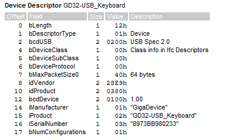
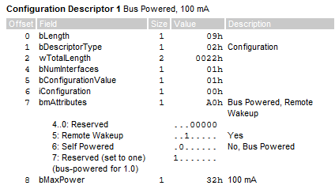
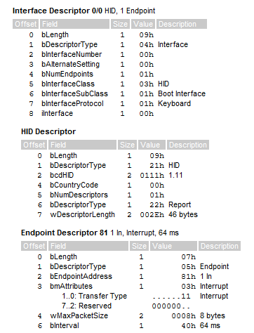
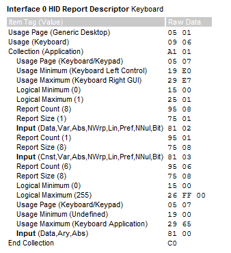

USB探索|3.USB键盘的实现
1. 实现思路
在GD32L233C-Start板子的官方例程中有一个USB CDC的例程，此外就没有任何USB相关的例程了。从这个例程中我也是可以了解USB设备的枚举过程。有了枚举过程那么剩下的就是设备描述符，HID描述符之类的了。正好有本书中对这些描述符有很好的介绍，那么我们就按照这个介绍来进行操作。
除了我们软件上的准备，硬件上还得有按键能达到输入的目的，GD32L233C-Start板子上除了用于复位的按键之外只有一个可供输入的外部按键，那么就用这个按键来实现键盘的输入。也就只是相当于实现了只有一个按键的键盘。
2. 设备描述符
设备描述符的配置在USBlyzer中可以看到如下所示：

下面详细说说这些字段表示的意思：
| 字段 | 释义 |
|---|---|
| bLength | 表示该描述符的长度。设备描述符的长度为18字节,写成十六进制就是0x12 |
| bDeseriptorType | 描述符的类型 。具体的取值如表355所列。设备描述符的编号为0x01。 |
| bcdUSB | 该设备所使用的USB协议的版本 。可以取20或者11等版本号。注意它是用BCD码来表示的例如USB20协议就是0x0200而USB1.1协议就是0x0110前面说过USB协议中使用的是小端结构,所以实际数据在传输时，是低字节在先的,也就是说USB20协议的bcdUSB拆成两个字节就是0x00和0x20。而USB1.1的 bcdUSB拆成两个字节就是0x10和0x01。 |
| bDeviceClass | 是设备所使用的类代码。设备的类代码由USB协会规定具体的类代码可查阅USB相关文档。对于大多数标准的USB设备类，该字段通常设置为0而在接口描述符中的bInterfaceClass中指定接口所实现的功能。当bDeviceClass为0时，下面的bDeviceSubClass也必须为0。如果bDeviceClass为0xFF表示是厂商自定义的设备类。 |
| bDeviceSubClass | 是设备所使用的子类代码。当类代码不为0和0xFF时子类代码由USB协议规定。当bDeviceClass为0时bDeviceSubClass也必须为0。 |
| bDeviceProtocol | 设备所使用的协议协议代码由USB协会规定。当该字段为0时表示设备不使用类所定义的协议。当该字段为0xFF时表示设备使用厂商自定义的协议。bDeviceProtocol必须要结合设备类和设备子类联合使用才有意义,因此当类代码为0时bDeviceProtocol应该也要为0。 |
| bMaxPackeSize0 | 端点0的最大包长。它的取值可以为8、16、32、64。 |
| idVender | 厂商的ID号。该1D号由USB协会分配，不能随意使用。可以跟USB协会申请一个厂商ID号 。 |
| idProduct | 产品ID号。与厂商ID号不一样它是由生产厂商自己根据产品来编号的比较自由。 |
| bcdDevice | 设备版本号。当同一个产品升级后(例如修改了固件增加了某些功能)可以通过修改设备的版本号来区别。 |
| iManufacturer | 描述厂商的字符串的索引值，当该值为0时，表示没有厂商字符串。主机获取设备描述符时会将索引值放在wValue的第一字节中，用来选择不同的字符串。 |
| iProduct | 描述产品的字符串的索引值。当该值为0时，表示没有产品字符串。当第一次插上某个USB设备时，会在Windows的右下角弹出一个对话框,显示发现新硬件，并且会显示该设备的名称。其实这里显示的信息就是从产品字符串里获取来的。如果想让它显示出所需要的信息，应该修改产品字符串。 |
| iSerialNumber | 设备的序列号字符串索引值。最好给你的每个产品指定一个唯一的序列号好比每个英特尔的奔四处理器都有一个ID号一样。设备序列号可能被主机联合VID和PID用来区别不同的设备,有时同时连接多个具有相同VID.PID以及设备序列号的设备可能会导致设备无法正确识别。当该值为0时，表示没有序列号字符串。 |
| bNumConfigurations | 表示设备有多少种配置。每种配置都会有一个配置描述符主机通过发送设置配置来选择某一种配置。大部分的USB设备只有一个配置，即该字段的值为1。 |
3. 配置描述符

| 字段 | 释义 |
|---|---|
| bLength | 表示该描述符的长度。标准的USB配置描述符的长度为9字节。 |
| bDescriptorType | 表示描述符的类型配置描述符的类型编码为0x02。 |
| wTotalLength | 表示整个配置描述符集合的总长度包括配置描述符、接口描述符、类特殊描述符(如果有)和端点描述符。注意低字节在先。 |
| bNumInterfaces | 表示该配置所支持的接口数量。通常功能单一的设备只具有一个接口(例如鼠标)而复合设备则具有多个接口(例如音频设备)。 |
| bConfiguration | 表示该配置的值。通常一个USB设备可以支持多个配置.bConfiguration就是每个配置的标识。设置配置请求时会发送一个配置值如果某个配置的bConfiguration值与它相匹配,就表示该配置被激活,为当前配置。 |
| iConfiguration | 大小为1字节,是描述该配置的字符串的索引值。如果该值为0则表示没有字符串。 |
| bmAttributes | 大小为1字节用来描述设备的一些特性。其中D7是保留的,必须要设置为1。D6表示供电方式,当D6为1时表示设备是自供电的;当D6为0时,表示设备是总线供电的。D5表示是否支持远程唤醒当D5为1时,支持远程唤醒。D4~D0保留,设置为0。 |
| bMaxPower | 大小为1字节,表示设备需要从总线获取的最大电流量,单位为2mA。例如如果需要200mA的最大电流,则该字节的值为100。 |
4. 接口描述符

接口描述符
| 字段 | 释义 |
|---|---|
| bLength | 大小为1字节,表示该描述符的长度。标准的USB接口描述符的长度为9字节。 |
| bDescriptorType | 大小为1字节,是描述符的类型。接口描述符的类型编码为0x04。 |
| bInterfaceNumber | 大小为1字节,表示该接口的编号。当一个配置具有多个接口时,每个接口的编号都不相同。从О开始依次递增对一-个配置的接口进行编号。 |
| bAlternateSetting | 大小为1字节,是该接口的备用编号。编号规则与 bInterfaceNumber一样,很少会使用该字段,设置为0。 |
| bNumEndpoints | 大小为1字节,是该接口所使用的端点数(不包括О端点)。如果该字段为0,则表示没有非О端点,只使用默认的控制端点。 |
| blnterfaceClass, bInterfaceSubClass, bInterfaceProtocol | 分别是接口所使用的类、子类以及协议﹐它们的代码由USB协会定义,跟设备描述符中的意义类似。通常在接口中定义设备的功能﹐而在设备描述符中将类、子类以及协议字段的值设置为0。 |
| iConfiguration | 大小为1字节,是描述该接口的字符串的索引值。如果该值为0,则表示没有字符串。 |
端点描述符
| 字段 | 释义 |
|---|---|
| bLength | 大小为1字节,表示该描述符的长度。标准的USB端点描述符的长度为5字节。 |
| bDescriptorType | 大小为1字节,表示描述符的类型。端点描述符的类型编码为0x05。 |
| bEndpointAddress | 大小为1字节,表示该端点的地址。最高位D7为该端点的传输方向,1为输人(有点像Input的第一个字母),0为输出(有点像Output的第一个字母)。D3~D0为端点号。D6~D4保留,设为0。 |
| bmAttributes | 大小为1字节,是该端点的属性。最低两位DI~DO表示该端点的传输类型,0为控制传输,1为等时传输,2为批量传输,3为中断传输。如果该端点是非等时传输的端点,那么D7~D2为保留值,设为0。如果该端点是等时传输的,则 D3~2表示同步的类型,0为无同步,1为异步,2为适配,3为同步;D5~D4表示用途,0为数据端点,1为反馈端点,2为暗含反馈的数据端点,3是保留值。D7~D6保留。 |
| wMaxPackeSize | 大小为1字节,是该端点所支持的最大包长度。注意低字节在先。对于全速模式和低速模式,D10~DO表示端点的最大包长,其他位保留为0。对于高速模式,D12～D11为每个帧附加的传输次数,具体请参看USB2.0协议。 |
| bInterval | 大小为1字节,表示该端点查询的时间。对于中断端点﹐表示查询的帧间隔数。对于等时传输以及高速模式的中断,批量传输﹐该字段的意义请参看USB2.0协议。 |
HID描述符
| 字段 | 释义 |
|---|---|
| bLength | 大小为1字节,是该描述符的总长度。它的大小与该描述符中下级描述符的个数有关。例如,只有一个下级描述符时,总长度为1+1＋2十1＋1+1＋2=9字节。 |
| bDescriptorType | 大小为1字节,是该描述符的编号。HID描述符的编号为0x21。 |
| bcdHID | 大小为2字节,是该设备所使用的HID协议的版本号。 |
| bCountyCode | 大小为1字节,是设备所适用的国家。通常我们的键盘是美式键盘,代码为33,即0x21。 |
| bNumDescriptors | 大小为1字节,是下级描述符的数量。该值至少为1,即至少要有一个报告描述符。下级描述符可以是报告描述符或物理描述符。 |
| bDescriptorType | 大小为1字节,是下级描述符的类型。报告描述符的编号为0x22,物理描述符编号为0x23。 |
| bDescriptorLength | 大小为2字节,是下级描述符的长度。当有多个下级描述符时, bDescritporType和 bDescriptorLength交替重复下去。 |
5. HID报表描述符

- 原文作者：Binean
- 原文链接：https://bzhou830.github.io/post/20220213GD32USB03/
- 版权声明：本作品采用知识共享署名-非商业性使用-禁止演绎 4.0 国际许可协议进行许可，非商业转载请注明出处（作者，原文链接），商业转载请联系作者获得授权。